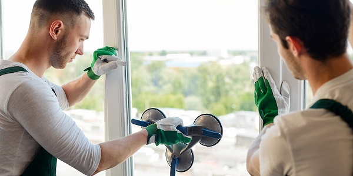
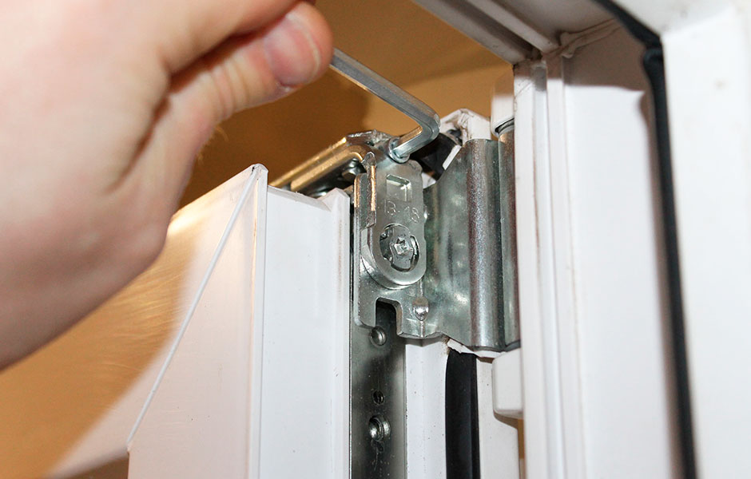
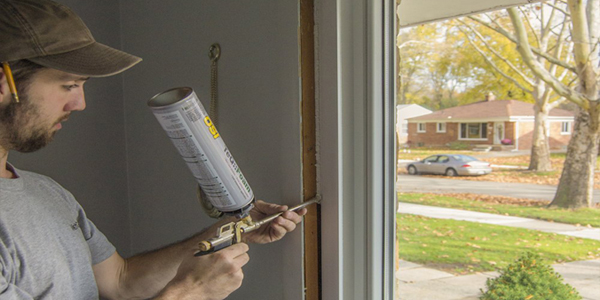
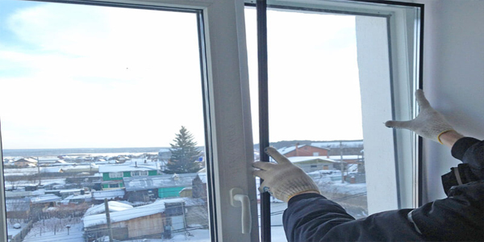
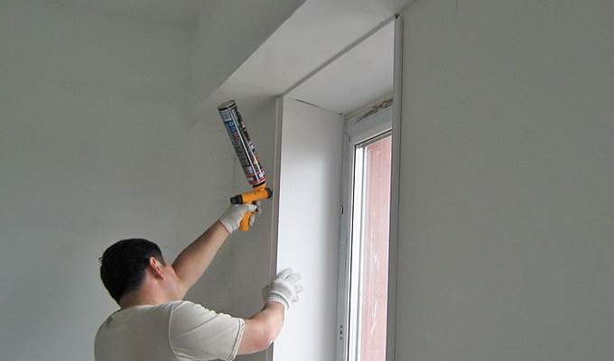

Ремонт окон Рязань.
Ваш комфорт - наша забота!
Наши услуги

ДИАГНОСТИКА ОКОН
Наши специалисты БЕСПЛАТНО проведут полную диагностику вашего окна.
ЗВОНИТЕ
с 8:00 до 20:00

РЕГУЛИРОВКА СТВОРОК
Отрегулируем створки, сделаем из глухой створки поворотную или откидную.
ЗВОНИТЕ
с 8:00 до 20:00


ЗАМЕНА СТЕКЛОПАКЕТА
Заменим стеклопакет, при желании, на более лучший по теплопроводности.
ЗВОНИТЕ
с 8:00 до 20:00

МОСКИТНАЯ СЕТКА
Изготовим новую или отремонтируем вашу москитную сетку.
ЗВОНИТЕ
с 8:00 до 20:00

ЗАМЕНА ОТКОСОВ И ПОДОКОННИКОВ
Заменим откосы, подоконники произведем полную замену фурнитуры.
ЗВОНИТЕ
с 8:00 до 20:00